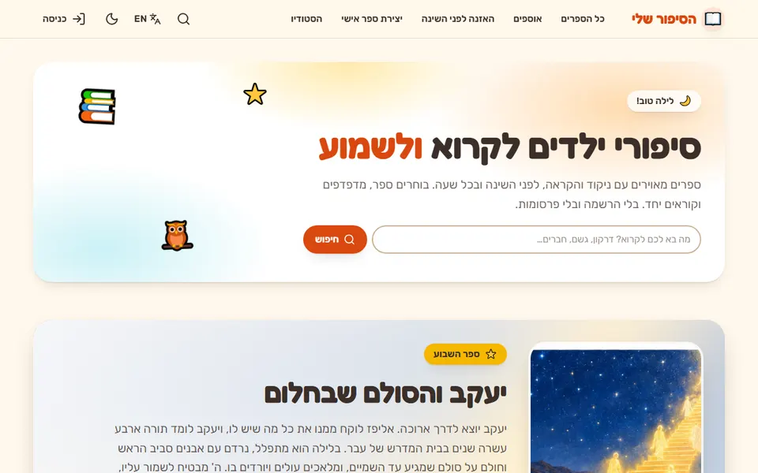

Featured · live product
MyStory: children's picture-book library
A full production site for reading and listening to illustrated children's books, which I designed, built and run on my own.
- 500+ books in Hebrew, Arabic and English, with collections, a language filter, PDF export and a podcast RSS feed
- AI pipeline: LLM-written stories, generated illustrations cut automatically from image grids, TTS narration with Hebrew vowel marks, AI music and animated pages
- Review tooling for sources, imports and bad image panels